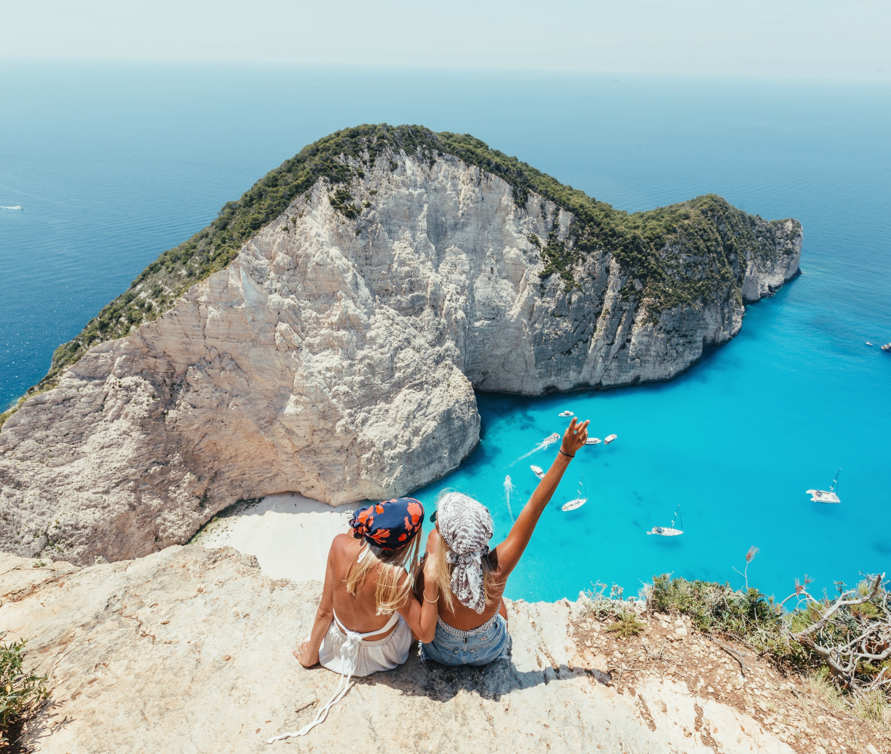
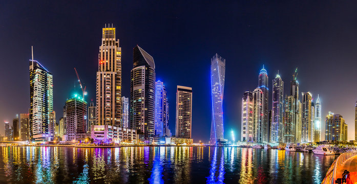
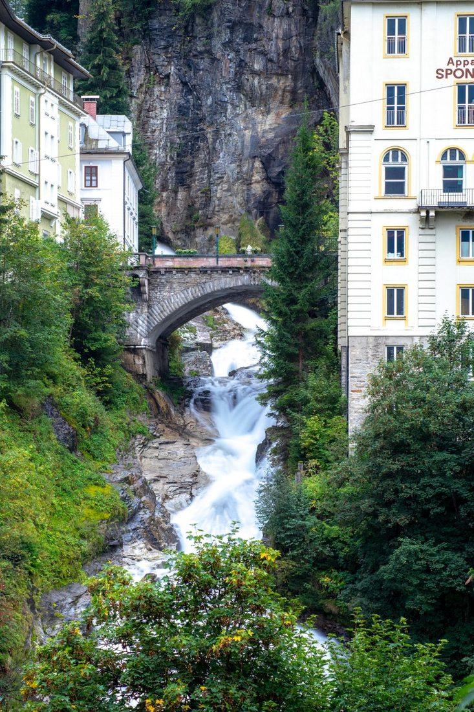
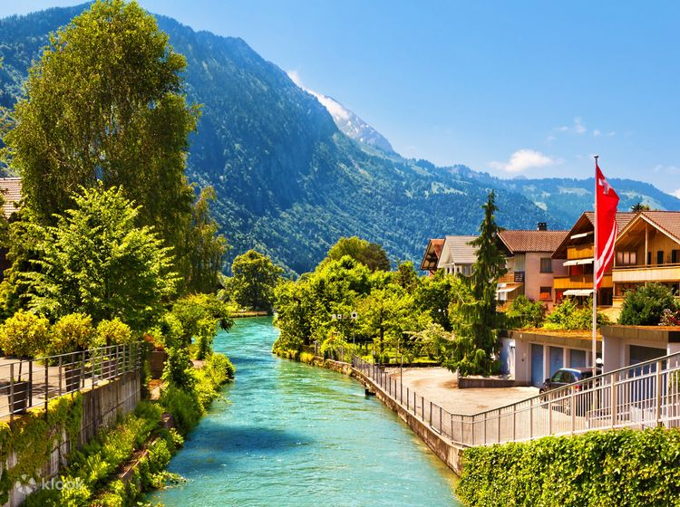
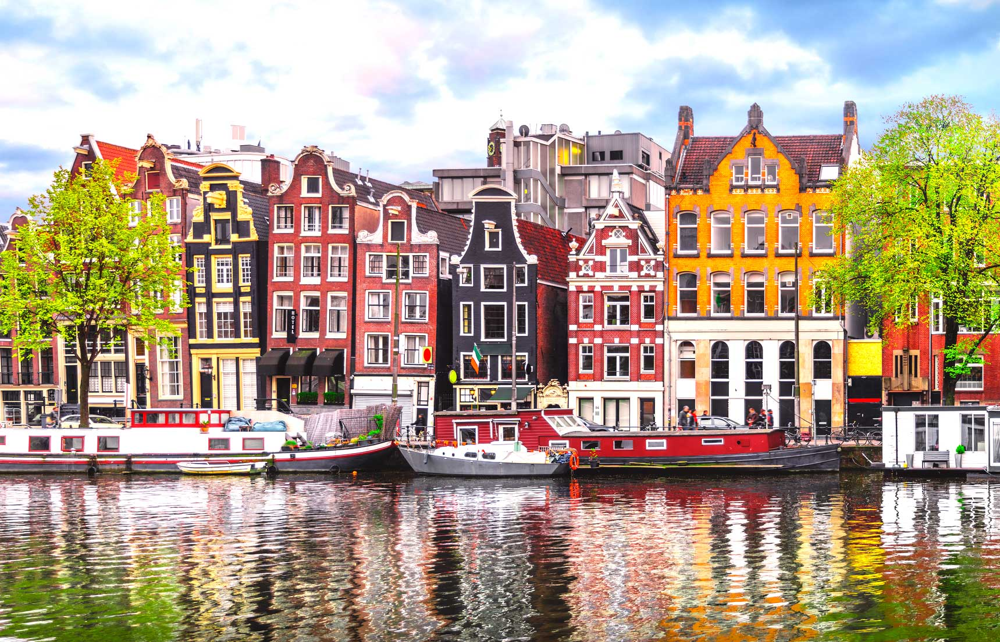
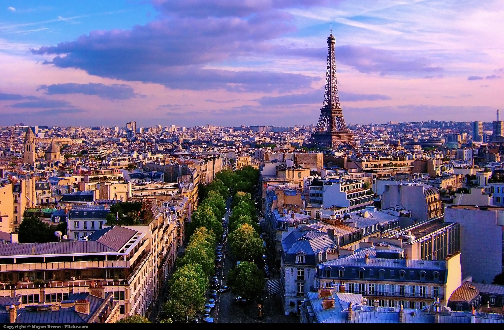

Enjoy Greek Islands
Pulling in more than 28 million tourists every year, Greece is one of the world’s most popular holiday spots. And it’s not hard to see why. Spotless sands, centuries of history, and traditional sugar-cube towns are just the start of what the country has to offer. The holiday variety’s a mixed bag, too. Pick from Greece package holidays that include self-catering and All Inclusive hotels, as well as options for families and couples. Zakynthos (aka Zante) is a verdant island endowed with fertile valleys and a temperate climate (area: 406 sq. km; coastline: 123 km). Its landscape diversity has resulted in different types of beaches: there are sandy beaches in secluded coves where the tranquil waters are deep blue on the island’s southeastern part; yet, if rugged cliffs and an interesting underwater world are to your liking, try the western part of the island. The Venetians, who ruled Zákynthos from 1484 to 1797, called the island “Fioro di Levante” (flower of the East) as there are over 7,000 species of flowers on Zákynthos. The third largest island of the Ionian Sea, after Corfu and Kefalonia, is internationally known as “Zante”. Zakynthos is said to have been the island’s first inhabitant and the ancient acropolis is attributed to him. He was the son of Dardanos who ruled the ancient kingdom of Frigia. A Venetian fort was built at later times on the site.
Habibi come to Dubai
Occupying the south-east horn of the Arabian Peninsula, the United Arab Emirates – or UAE, for short – is a country made up of seven states, called emirates. Each one tells its own story, but they all share one thing – the climate. This part of the world basks in toasty winters and baking-hot summers.
Beautiful beaches, record-breaking attractions and experiences like no other – Dubai is the place to be in 2024. It's no wonder we are the first city to be named Tripadvisor's #1 Top Destination in the World for three years running. Let's explore! Whether you’re looking to raise your adrenaline levels with a desert safari or enjoy a luxury overnight stay, you'll find plenty to do in our 'desert city'. Everything feels extra spectacular in Dubai—from the ultra-modern Burj Khalifa to the souks and malls filled with gold and jewelry vendors. It’s a place where if you can dream it, you can do it: Whether that means skiing indoors, dune-surfing in the desert, or zip-lining above the city. But it’s not all glitz and adrenaline-pumping action. Stroll through the winding alleys of Al Fahidi Historical Neighborhood to see what Dubai was like during the mid-19th century. Or visit the Jumeirah Mosque (one of the few mosques open to non-Muslims) and learn about Emirati culture. Spot some street art on Jumeirah Beach Road and grab a bite at a shawarma shop, or spend the day hunting for spices and perfume then round things out with a Michelin-starred meal. You can really do it all and we’ve got more recs, below.
Visit Bad Gastein
Set your own pace and enjoy snap-worthy scenery as you walk through the Austrian mountains, just like Julie Andrews in The Sound of Music. The peaks are dotted with flower-filled meadows and teal-blue lakes, like Lake Wolfgang and Lake Zell. And you can make the most of the local buses, trains and summer lifts to explore even further. In the midst of Hohe Tauern National Park and in the heart of Salzburg province lies Bad Gastein. A place you can breathe in the fresh mountain air at a fog-free elevation of 1,000 meters above sea level. Its distinctive townscape, which includes beautiful "Belle Époque" buildings, blends harmoniously into its natural setting. An Austrian spa town of world renown, with a flair all its own: relaxation and regeneration in pure mountain air, combined with an ideal alpine climate and water from Gastein’s hot springs, guaranteeing an exceptional escape for guests who expect the very best!
Go hiking in Interlacken
Switzerland is a land of railways. In the mountains, you can chug-chug up to the Schynige Platte peak to explore the Alpine Garden, or ride the Jungfrau train up to the highest station in Europe at 3,454m. And since all our transfers to the resorts are by Swiss Rail too, you'll be able to experience the trains from the moment you arrive wherever you’re staying. Plus, you can use your Swiss Half Fare Card to get up to 50% off tickets during your stay. Interlaken lies in the Bernese Oberland on an alluvial plain, between Lake Thun and Lake Brienz. The vacation destination, which is presided over by the three mighty mountains, Eiger, Mönch and Jungfrau, is the starting point for numerous activities. If you’re after a winter sports holiday, you can’t find a more gorgeous place to do it than Interlaken, the popular Swiss resort town. There’s superlative skiing, toboggan rides, miles of sledding tracks (which, like the ski slopes, vary in difficulty), snowboarding… all with amazing views of the mountains. In summer, hike among the ibex at nearby Neiderhorn, or shop for watches in the town’s boutiques.
Retreat in Amsterdam
Amsterdam is the Netherlands’ most famous city. Its winding streets, collection of canals and tall, narrow houses are immediately recognisable. And, it’s packed full of things to do. You’ve got museums of all shapes and sizes and attractions like the highest swing in Europe, alongside an excellent food scene and lively nightlife. Just half an hour’s drive outside of Amsterdam you’ll find Haarlem. This place is another historical hotspot, and it’s known for being a haven for shopping fans. As one of the most famous cities in the world, Amsterdam is synonymous with vibrant culture, rich history, inclusiveness and beautiful canals. Since its construction in the 17th century, the Amsterdam canal ring has grown into one of the most unique urban landscapes in the world. From its picturesque canals and bridges to its historic homes, Amsterdam could be considered straight out of a fairytale (and the brightly-colored bicycles and tulip stands around town don’t hurt either). Must-see sights include the Anne Frank House, the Van Gogh Museum, and the world's only floating flower market. Rent a bike and join thousands of locals peddling around. Other visitors might want to linger in the local coffee shops, which is just a normal part of the city's landscape. Check out more recs below to make the most of your trip. There are over 800,000 bicycles in Amsterdam. That’s more bikes than people! Cycling in Amsterdam is a way of life made easier by the city’s unbeatable network of cycle routes and flat landscape. Amsterdam regularly comes out on top in lists of the world’s most cycle-friendly cities, and there’s no finer way to explore the region’s attractions than by pedal power. Hop on your bike and head to Sloterplas for a dip in the sprawling lake, or cycle over to Ouderkerk aan de Amstel to explore a 12th-century village idyll packed with historic sights. Many of Amsterdam’s best-kept secrets can be discovered from the comfort of your saddle.
Enjoy city trip to Paris
The capital of France seems to have been designed specifically for the enjoyment of its visitors. Its streets, squares, buildings, gardens, and monuments beckon tourists to return, and indeed, many do. Some of the most memorable things to do in Paris include visiting the Eiffel Tower, the Arc de Triomphe, and Notre Dame Cathedral. During the evening, experiencing one of the legendary Moulin Rouge cabaret shows, strolling through some of the most picturesque neighborhoods, like Montmartre, or climbing the Montparnasse Tower is a must. It's always a good time to visit Paris. Depending on where you fly from, you can either make the most of the low-cost airlines flying into the city from other European cities or take one of its direct flights from further away destinations. If you have children, why not surprise them with a trip to Disneyland? Paris lives up to its hype: A city with unbelievable food and culture, plus stunning views everywhere you turn. With 18 arrondissements, it’s a lot to see in one trip, but each neighborhood has a personality all its own. You can’t miss the iconic 7th, where art and history meet—there’s the Eiffel Tower, sure, but the impressive Musée du quai Branly is just a short walk away. It houses an amazing collection of indigenous art. Or, hit up Montmartre (the 18th), with its boho shops and cozy brasseries. It’s a must-stop on the way up or down from Sacre Coeur. While the French practically invented fine dining, don’t skip the street food—Paris has world-class kebabs and falafel. But no matter where you are, be sure to pop into a sidewalk cafe, sip a glass of wine, and people watch—it’s the way to get a taste of true Parisian culture.